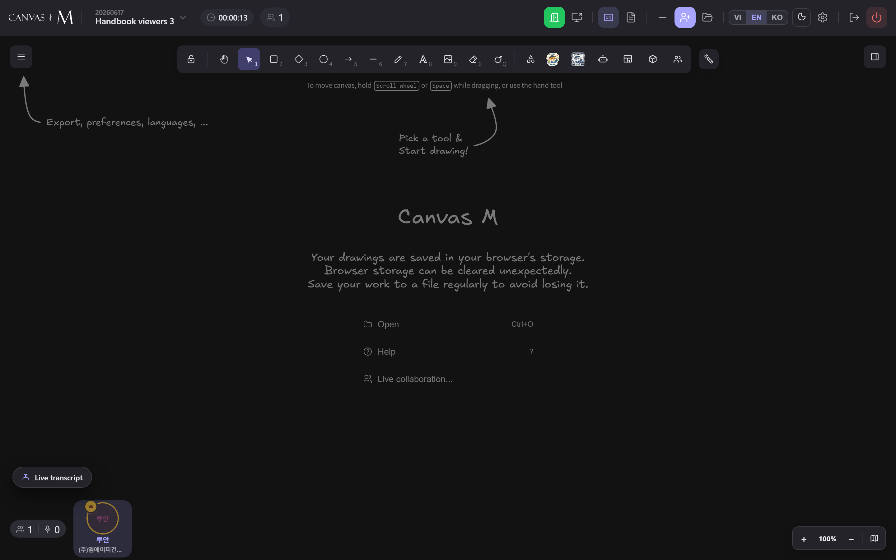

Viewing documents
A PDF spec, a DXF floor plan, an IFC building model — Canvas M opens all three right on the shared canvas. Turn pages, toggle layers, orbit a 3D model, slice it, measure it. Everyone in the room sees the page you land on; the rest of the controls are yours to explore at your own pace.
Anchors, panes, and what your peers see
Every document you open started life as an upload in the room library — the bar on the right where files are grouped under PDF documents, CAD drawings, and IFC models. Dropping one onto the canvas creates an anchor: a tile that shows the document in place, sized and positioned like any other element.
There are two ways to look at a document, and they behave differently. A PDF shows its page directly on the canvas inside the anchor — you read it where it sits. A DXF drawing or an IFC model can also be opened in a dedicated pane that docks to the right edge of the screen, giving you a full interactive viewer with its own toolbar. The canvas anchor is the shared object; the pane is your personal workspace for inspecting it.
The page you turn to is shared. The layers you toggle, the model you orbit, the slice you cut — those stay on your screen.
Canvas M accepts only four kinds of file. If someone tries to add anything else, the room reports “Only images, DXF, PDF and IFC are supported for now.” and skips it.
Read a PDF and turn its pages
- Find the PDF anchor on the canvas — it carries a 📄 label with the file name and, once loaded, a page counter like 3 / 24.
- To change the page, right-click the anchor. A small menu appears with Edit PDF (change page) and Cancel.
- Choose Edit PDF (change page) to drop the anchor into focus mode. A toolbar appears across the bottom of the tile.
- Use ← (Previous page) and → (Next page) to move through the document; the indicator in the middle shows the current page and total.
- When you are done, click × Exit or press Esc to leave focus mode.
→ The page you land on is saved to the anchor and pushed to everyone in the room, so the whole meeting is looking at the same figure. The arrows grey out at the first and last page.
Double-clicking a PDF anchor does nothing on purpose — it will not drop you into Excalidraw's text editor the way a plain rectangle would.
When you are reviewing a finished meeting in read-only mode, page changes are blocked — the anchor stays on whatever page the live meeting ended on.
Open a DXF in the CAD view
- Click the CAD view button in the canvas toolbar (the floor-plan icon, tooltip “CAD view — open DXF in a pane”).
- A popover titled DXF in library lists every drawing in the room. Pick one to open it as a tab in the right-docked pane.
- Alternatively, right-click a DXF anchor on the canvas and choose Open in CAD view.
- Each file opens in its own tab marked 📍; click a tab to switch, click its × to close just that drawing.
- Drag the left edge of the pane (the resize handle) to make the viewer wider or narrower.
- Close the whole pane with the × in the top-right corner.
→ The DXF loads into an interactive viewer. Pan by dragging, zoom with the scroll wheel. Re-opening a drawing that is already a tab simply switches to it rather than duplicating.
If the popover says “No DXF files in the library yet.” with the hint “Upload .dxf via the library bar on the right.”, there is simply nothing to open yet.
- 1 Layers — opens the Layers ({count}) panel. Tick or untick each layer to show or hide it; the colour swatch matches the DXF layer colour. All turns everything on, None turns everything off.
- 2 Fit — resets the view to frame the whole drawing (tooltip “Fit DXF to pane (reset the view)”).
- 3 Lock / Locked — freezes pan and zoom so you cannot nudge the drawing by accident. Click again to unlock; the tooltip reads “View is locked — click to unlock pan/zoom” when active.
- 4 Tab strip — one tab per open drawing, each with a × to close it; the pane × at top-right closes the entire CAD view.
Open a building model in 3D view
- Click the 3D view button in the canvas toolbar (the cube icon, tooltip “3D view — open IFC model in a pane”).
- The popover IFC in library lists every model; pick one to open it as a tab marked 🧊 in the right-docked pane.
- Or right-click an IFC anchor on the canvas and choose Open in 3D view.
- Once it loads, drag to orbit, scroll to zoom, and click any element to select it and open its properties.
- Use Fit to reframe the whole model whenever you lose your bearings.
- Resize the pane from its left edge, switch models via the tabs, and close with the tab × or the pane ×.
→ Clicking an element opens a properties panel listing its Name, Type, Category, Family, and Type name, plus any extra Properties the model carries. Close it with its × (Deselect).
While the model is still loading you will see “Loading 3D model…”. Every toolbar button stays greyed out until the model is ready.

- 1 Fit — frames the whole model and resets the camera (“Fit model to pane”).
- 2 Storeys — lists the building's floors by elevation. Click one to isolate it; click All to show every storey again. The badge shows the floor count.
- 3 Objects — the object tree, grouped storey → category → element. Expand a branch, click an element to select and frame it, or use the eye toggle (👁 / 🚫) to hide and show it. Show all storeys clears any isolation.
- 4 View style — a three-way switch: Shaded, Clay, Wireframe (see the gallery below).
- 5 Section — the scissors group with X, Y, Z cut axes. Pick an axis, drag the plane in the 3D frame to slice; Flip swaps which half is kept, and the eye button hides or shows the cut plane while keeping the slice. Click the active axis again to turn the section off.
- 6 Measure — click two points on the model to read the distance; the result appears as 📏 with two decimals. Click Measure again to stop.
- 7 Ghost — fades everything except your current selection so a single element stands out.
Three ways to render the model
Shows each element's original colour — the realistic default.
Overrides everything with a uniform grey, so form reads without colour noise.
Shows edge lines only — useful for seeing through the model.
Switch to Clay for clean massing discussions, Wireframe to inspect structure behind a facade, and back to Shaded when colour matters.
Every 3D-view control at a glance
| Control | What it does | Label / tooltip |
|---|---|---|
| Fit | Reframe the whole model and reset the camera | Fit model to pane (reset the view) |
| Storeys | Isolate one floor; All shows every floor | {count} storeys — click to isolate |
| Objects | Browse the storey / category / element tree; select, show, hide | Object tree — browse, select, show/hide |
| Shaded / Clay / Wireframe | Switch render style | View style: {label} |
| Section X / Y / Z | Cut the model along an axis; drag the plane to move it | {axis}-axis section — drag the plane in the 3D frame to move it |
| Flip | Swap which half of the section is kept | Flip — swap which half is kept |
| Plane (eye) | Hide the cut plane but keep the slice | Hide the cut plane (keep the slice) |
| Measure | Click two points to read the distance | Measure distance — click 2 points on the model |
| Ghost | Fade everything except the selection | Ghost — fade everything except the selection |
Section, Flip, and the plane toggle stay disabled until you have picked a cut axis. While a section is active the hint “Drag the cut plane in the 3D frame to move it.” sits beside the toolbar.
Document viewing — troubleshooting
A PDF / DXF / IFC tile shows “Waiting for … file from peer…” — The file bytes have not reached you yet — the person who added it is still syncing it across.
Wait a moment; it fills in automatically once the file arrives. No action needed. → 12.1
“Maximum DXF files already open” (or “Maximum 3D models already open”) — Every viewer slot is in use — the renderer caps how many heavy models run at once.
Close another open file or tab, then try opening this one again. → 12.3
“Couldn't read DXF: …” or “Couldn't read IFC model: …” — The file is corrupt or in an unsupported variant; the message after the colon is the underlying reason.
Ask the owner to re-export and re-upload the file. → 12.4
A DXF tab shows “DXF file not found” — The tab is left over from a different meeting; its file is not in this room's library.
Close the phantom tab — Canvas M also prunes these automatically once the library loads. → 12.3
The 3D toolbar buttons are all greyed out — The model is still loading (“Loading 3D model…”) or has no storeys / objects to show.
Wait for the model to finish; tooltips like “No storeys” / “No objects” mean that data simply isn't in the file. → 12.6
Page turns on a PDF have no effect — You are reviewing a finished meeting in read-only mode, where page changes are blocked.
This is expected — read-only review keeps the page fixed. → 12.2
Pan, zoom, and orbit happen inside the viewer pane only — they never move the underlying canvas, so you can explore freely without disturbing the shared layout.